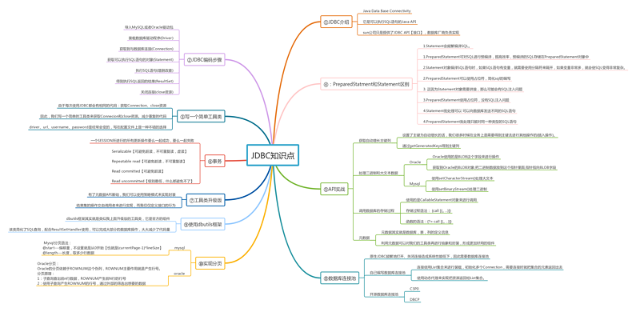

以下我是归纳的JDBC知识点图：

图上的知识点都可以在我其他的文章内找到相应内容。
JDBC操作数据库的步骤 ？
代码如下：
Connection connection = null;
Statement statement = null;
ResultSet resultSet = null;
try {
/*
* 加载驱动有两种方式
*
* 1：会导致驱动会注册两次，过度依赖于mysql的api，脱离的mysql的开发包，程序则无法编译
* 2：驱动只会加载一次，不需要依赖具体的驱动，灵活性高
*
* 我们一般都是使用第二种方式
* */
//1.
//DriverManager.registerDriver(new com.mysql.jdbc.Driver());
//2.
Class.forName("com.mysql.jdbc.Driver");
//获取与数据库连接的对象-Connetcion
connection = DriverManager.getConnection("jdbc:mysql://localhost:3306/zhongfucheng", "root", "root");
//获取执行sql语句的statement对象
statement = connection.createStatement();
//执行sql语句,拿到结果集
resultSet = statement.executeQuery("SELECT * FROM users");
//遍历结果集，得到数据
while (resultSet.next()) {
System.out.println(resultSet.getString(1));
System.out.println(resultSet.getString(2));
}
} catch (SQLException e) {
e.printStackTrace();
} catch (ClassNotFoundException e) {
e.printStackTrace();
} finally {
/*
* 关闭资源，后调用的先关闭
*
* 关闭之前，要判断对象是否存在
* */
if (resultSet != null) {
try {
resultSet.close();
} catch (SQLException e) {
e.printStackTrace();
}
}
if (statement != null) {
try {
statement.close();
} catch (SQLException e) {
e.printStackTrace();
}
}
if (connection != null) {
try {
connection.close();
} catch (SQLException e) {
e.printStackTrace();
}
}
}JDBC中的Statement 和PreparedStatement的区别？
区别：
JDBC中大数据量的分页解决方法?
最好的办法是利用sql语句进行分页，这样每次查询出的结果集中就只包含某页的数据内容。
mysql语法：
SELECT *
FROM 表名
LIMIT [START], length;
oracle语法：
SELECT *FROM (
SELECT 列名,列名,ROWNUM rn
FROM 表名
WHERE ROWNUM<=(currentPage*lineSize)) temp
WHERE temp.rn>(currentPage-1)*lineSize;
说说数据库连接池工作原理和实现方案？
工作原理：
实现方案：连接池使用集合来进行装载，返回的Connection是原始Connection的代理，代理Connection的close方法，当调用close方法时，不是真正关连接，而是把它代理的Connection对象放回到连接池中，等待下一次重复利用。
具体代码：
@Override
public Connection getConnection() throws SQLException {
if (list.size() > 0) {
final Connection connection = list.removeFirst();
//看看池的大小
System.out.println(list.size());
//返回一个动态代理对象
return (Connection) Proxy.newProxyInstance(Demo1.class.getClassLoader(), connection.getClass().getInterfaces(), new InvocationHandler() {
@Override
public Object invoke(Object proxy, Method method, Object[] args) throws Throwable {
//如果不是调用close方法，就按照正常的来调用
if (!method.getName().equals("close")) {
method.invoke(connection, args);
} else {
//进到这里来，说明调用的是close方法
list.add(connection);
//再看看池的大小
System.out.println(list.size());
}
return null;
}
});
}
return null;
}
Java中如何进行事务的处理?
Connection类中提供了4个事务处理方法:
savepoint:保存点
下述程序是一段简单的基于JDBC的数据库访问代码,实现了以下功能:从数据库中查询product表中的所有记录,然后打印输出到控制台.该代码质量较低,如没有正确处理异常,连接字符串以”魔数”的形式直接存在于代码中等,请用你的思路重新编写程序,完成相同的功能,提高代码质量.
原来的代码：
public void printProducts(){
Connection c = null;
Statements s = null;
ResultSet r = null;
try{
c=DriverManager.getConnection("jdbc:oracle:thin:@127.0.0.1:1521:sid","username","password");
s=c.createStatement();
r=s.executeQuery("select id, name, price from product");
System.out.println("Id\tName\tPrice");
while(r.next()){
int x = r.getInt("id");
String y = r.getString("name");
float z = r.getFloat("price");
System.out.println(x + "\t" + y + "\t" + z);
}
} catch(Exception e){
}
}修改后的代码：
class Constant{
public static final String URL="jdbc:oracle:thin:@127.0.0.1:1521:sid";
public static final String USERNAME="username";
public static final String PASSWORD="password";
}
class DAOException extends Exception{
public DAOException(){
super();
}
public DAOException(String msg){
super(msg);
}
}
public class Test{
public void printProducts() throws DAOException{
Connection c = null;
Statement s = null;
ResultSet r = null;
try{
c = DriverManager.getConnection(Constant.URL,Constant.USERNAME,Constant.PASSWORD);
s = c.createStatement();
r = s.executeQuery("select id,name,price from product");
System.out.println("Id\tName\tPrice");
while(r.next()){
int x = r.getInt("id");
String y = r.getString("name");
float z = r.getFloat("price");
System.out.println(x + "\t" + y + "\t" + z);
}
} catch (SQLException e){
throw new DAOException("数据库异常");
} finally {
try{
r.close();
s.close();
c.close();
} catch (SQLException e) {
e.printStackTrace();
}
}
}
}修改点：
写出一段JDBC连接本机MySQL数据库的代码
Class.forName("com.mysql.jdbc.Driver");
String url="jdbc:mysql://localhost/test";
Stirng user='root';
String password='root';
Connection conn = DriverManager.getConnection(url,user,password);
JDBC是如何实现Java程序和JDBC驱动的松耦合的？
通过制定接口，数据库厂商来实现。我们只要通过接口调用即可。随便看一个简单的JDBC示例，你会发现所有操作都是通过JDBC接口完成的，而驱动只有在通过Class.forName反射机制来加载的时候才会出现。
execute，executeQuery，executeUpdate的区别是什么？
PreparedStatement的缺点是什么，怎么解决这个问题？
PreparedStatement的一个缺点是，我们不能直接用它来执行in条件语句；需要执行IN条件语句的话，下面有一些解决方案：
JDBC的脏读是什么？哪种数据库隔离级别能防止脏读？
脏读：一个事务读取到另外一个事务未提交的数据
例子：A向B转账，A执行了转账语句，但A还没有提交事务，B读取数据，发现自己账户钱变多了！B跟A说，我已经收到钱了。A回滚事务【rollback】，等B再查看账户的钱时，发现钱并没有多。
下面的三种个隔离级别都可以防止：
什么是幻读，哪种隔离级别可以防止幻读？
是指在一个事务内读取到了别的事务插入的数据，导致前后读取不一致。
只有TRANSACTION_SERIALIZABLE隔离级别才能防止产生幻读。
JDBC的DriverManager是用来做什么的？
JDBC的ResultSet是什么?
有哪些不同的ResultSet？
根据创建Statement时输入参数的不同，会对应不同类型的ResultSet。如果你看下Connection的方法，你会发现createStatement和prepareStatement方法重载了，以支持不同的ResultSet和并发类型。
一共有三种ResultSet对象。
ResultSet有两种并发类型。
JDBC的DataSource是什么，有什么好处
DataSource即数据源，它是定义在javax.sql中的一个接口，跟DriverManager相比，它的功能要更强大。我们可以用它来创建数据库连接，当然驱动的实现类会实际去完成这个工作。除了能创建连接外，它还提供了如下的特性：
如何通过JDBC的DataSource和Apache Tomcat的JNDI来创建连接池？
Tomcat服务器也给我们提供了连接池，内部其实就是DBCP
步骤：
context.xml文件的配置：
<Context>
<Resource name="jdbc/EmployeeDB"
auth="Container"
type="javax.sql.DataSource"
username="root"
password="root"
driverClassName="com.mysql.jdbc.Driver"
url="jdbc:mysql://localhost:3306/zhongfucheng"
maxActive="8"
maxIdle="4"/>
</Context>
try {
//初始化JNDI容器
Context initCtx = new InitialContext();
//获取到JNDI容器
Context envCtx = (Context) initCtx.lookup("java:comp/env");
//扫描以jdbc/EmployeeDB名字绑定在JNDI容器下的连接池
DataSource ds = (DataSource)
envCtx.lookup("jdbc/EmployeeDB");
Connection conn = ds.getConnection();
System.out.println(conn);
}
Apache的DBCP是什么
如果用DataSource来获取连接的话，通常获取连接的代码和驱动特定的DataSource是紧耦合的。另外，除了选择DataSource的实现类，剩下的代码基本都是一样的。
Apache的DBCP就是用来解决这些问题的，它提供的DataSource实现成为了应用程序和不同JDBC驱动间的一个抽象层。Apache的DBCP库依赖commons-pool库，所以要确保它们都在部署路径下。
使用DBCP数据源的步骤：
private static DataSource dataSource = null;
static {
try {
//读取配置文件
InputStream inputStream = Demo3.class.getClassLoader().getResourceAsStream("dbcpconfig.properties");
Properties properties = new Properties();
properties.load(inputStream);
//获取工厂对象
BasicDataSourceFactory basicDataSourceFactory = new BasicDataSourceFactory();
dataSource = basicDataSourceFactory.createDataSource(properties);
} catch (IOException e) {
e.printStackTrace();
} catch (Exception e) {
e.printStackTrace();
}
}
public static Connection getConnection() throws SQLException {
return dataSource.getConnection();
}
//这里释放资源不是把数据库的物理连接释放了，是把连接归还给连接池【连接池的Connection内部自己做好了】
public static void release(Connection conn, Statement st, ResultSet rs) {
if (rs != null) {
try {
rs.close();
} catch (Exception e) {
e.printStackTrace();
}
rs = null;
}
if (st != null) {
try {
st.close();
} catch (Exception e) {
e.printStackTrace();
}
}
if (conn != null) {
try {
conn.close();
} catch (Exception e) {
e.printStackTrace();
}
}
}
常见的JDBC异常有哪些？
有以下这些：
JDBC中存在哪些不同类型的锁?
从广义上讲，有两种锁机制来防止多个用户同时操作引起的数据损坏。
java.util.Date和java.sql.Date有什么区别？
java.util.Date包含日期和时间，而java.sql.Date只包含日期信息，而没有具体的时间信息。如果你想把时间信息存储在数据库里，可以考虑使用Timestamp或者DateTime字段
SQLWarning是什么，在程序中如何获取SQLWarning？
SQLWarning是SQLException的子类，通过Connection, Statement, Result的getWarnings方法都可以获取到它。 SQLWarning不会中断查询语句的执行，只是用来提示用户存在相关的警告信息。
如果java.sql.SQLException: No suitable driver found该怎么办？
如果你的SQL URL串格式不正确的话，就会抛出这样的异常。不管是使用DriverManager还是JNDI数据源来创建连接都有可能抛出这种异常。它的异常栈看起来会像下面这样。
org.apache.tomcat.dbcp.dbcp.SQLNestedException: Cannot create JDBC driver of class 'com.mysql.jdbc.Driver' for connect URL ''jdbc:mysql://localhost:3306/UserDB'
at org.apache.tomcat.dbcp.dbcp.BasicDataSource.createConnectionFactory(BasicDataSource.java:1452)
at org.apache.tomcat.dbcp.dbcp.BasicDataSource.createDataSource(BasicDataSource.java:1371)
at org.apache.tomcat.dbcp.dbcp.BasicDataSource.getConnection(BasicDataSource.java:1044)
java.sql.SQLException: No suitable driver found for 'jdbc:mysql://localhost:3306/UserDB
at java.sql.DriverManager.getConnection(DriverManager.java:604)
at java.sql.DriverManager.getConnection(DriverManager.java:221)
at com.journaldev.jdbc.DBConnection.getConnection(DBConnection.java:24)
at com.journaldev.jdbc.DBConnectionTest.main(DBConnectionTest.java:15)
Exception in thread "main" java.lang.NullPointerException
at com.journaldev.jdbc.DBConnectionTest.main(DBConnectionTest.java:16)解决这类问题的方法就是，检查下日志文件，像上面的这个日志中，URL串是'jdbc:mysql://localhost:3306/UserDB，只要把它改成jdbc:mysql://localhost:3306/UserDB就好了。
JDBC的RowSet是什么，有哪些不同的RowSet？
RowSet用于存储查询的数据结果，和ResultSet相比，它更具灵活性。RowSet继承自ResultSet，因此ResultSet能干的，它们也能，而ResultSet做不到的，它们还是可以。RowSet接口定义在javax.sql包里。
RowSet提供的额外的特性有：
RowSet分为两大类：
B. 离线型RowSet——这类对象不需要和数据库进行连接，因此它们更轻量级，更容易序列化。它们适用于在网络间传递数据。
有四种不同的离线型RowSet的实现。
什么是JDBC的最佳实践？
如果文章有错的地方欢迎指正，大家互相交流。习惯在微信看技术文章的同学，可以关注微信公众号:Java3y